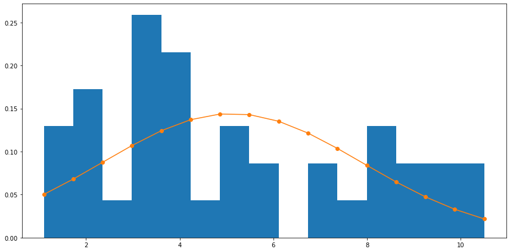
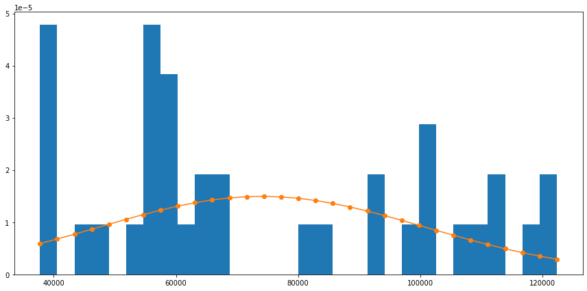

import scipy
import pandas as pd
import seaborn as sns
from scipy import stats
from scipy.stats import norm
import matplotlib.pyplot as plt
salary_data = pd.read_csv('datasets/Salary_Data.csv')
salary_data.head()
| YearsExperience | Salary | |
|---|---|---|
| 0 | 1.1 | 39343.0 |
| 1 | 1.3 | 46205.0 |
| 2 | 1.5 | 37731.0 |
| 3 | 2.0 | 43525.0 |
| 4 | 2.2 | 39891.0 |
num_records = salary_data.shape[0]
num_records
37
import math
def z_score(series, value):
mean = float(series.mean())
variance = float(series.var())
std = float(math.sqrt(variance))
return float((value - mean) / std)
salary_data['z_score_salary'] = [1.00] * num_records
salary_data.head()
| YearsExperience | Salary | z_score_salary | |
|---|---|---|---|
| 0 | 1.1 | 39343.0 | 1.0 |
| 1 | 1.3 | 46205.0 | 1.0 |
| 2 | 1.5 | 37731.0 | 1.0 |
| 3 | 2.0 | 43525.0 | 1.0 |
| 4 | 2.2 | 39891.0 | 1.0 |
for i in range(len(salary_data['Salary'])):
salary_data['z_score_salary'][i] = z_score(salary_data['Salary'],
salary_data['Salary'][i])
salary_data['Salary'].mean()
74117.4054054054
salary_data.sample(10)
| YearsExperience | Salary | z_score_salary | |
|---|---|---|---|
| 21 | 5.1 | 66029.0 | -0.298976 |
| 35 | 10.3 | 122391.0 | 1.784361 |
| 18 | 4.1 | 57081.0 | -0.629725 |
| 29 | 8.3 | 101302.0 | 1.004838 |
| 24 | 6.0 | 93940.0 | 0.732712 |
| 33 | 9.5 | 116969.0 | 1.583945 |
| 23 | 5.9 | 81363.0 | 0.267822 |
| 8 | 3.0 | 60150.0 | -0.516284 |
| 34 | 9.6 | 112635.0 | 1.423745 |
| 32 | 9.0 | 105582.0 | 1.163041 |
salary_data.describe()
| YearsExperience | Salary | z_score_salary | |
|---|---|---|---|
| count | 37.000000 | 37.000000 | 3.700000e+01 |
| mean | 5.118919 | 74117.405405 | 1.920386e-16 |
| std | 2.804048 | 27053.719205 | 1.000000e+00 |
| min | 1.100000 | 37731.000000 | -1.344969e+00 |
| 25% | 3.000000 | 56642.000000 | -6.459521e-01 |
| 50% | 4.100000 | 63218.000000 | -4.028801e-01 |
| 75% | 7.900000 | 101302.000000 | 1.004838e+00 |
| max | 10.500000 | 122391.000000 | 1.784361e+00 |
salary_data['z_score_yrexp'] = [1.00] * num_records
salary_data.head()
| YearsExperience | Salary | z_score_salary | z_score_yrexp | |
|---|---|---|---|---|
| 0 | 1.1 | 39343.0 | -1.285384 | 1.0 |
| 1 | 1.3 | 46205.0 | -1.031740 | 1.0 |
| 2 | 1.5 | 37731.0 | -1.344969 | 1.0 |
| 3 | 2.0 | 43525.0 | -1.130802 | 1.0 |
| 4 | 2.2 | 39891.0 | -1.265128 | 1.0 |
salary_data['z_score_yrexp'] = scipy.stats.zscore(salary_data['YearsExperience'])
salary_data.sample(10)
| YearsExperience | Salary | z_score_salary | z_score_yrexp | |
|---|---|---|---|---|
| 8 | 3.0 | 60150.0 | -0.516284 | -0.766088 |
| 3 | 2.0 | 43525.0 | -1.130802 | -1.127634 |
| 34 | 9.6 | 112635.0 | 1.423745 | 1.620119 |
| 11 | 3.0 | 60150.0 | -0.516284 | -0.766088 |
| 24 | 6.0 | 93940.0 | 0.732712 | 0.318552 |
| 28 | 8.1 | 101302.0 | 1.004838 | 1.077799 |
| 25 | 6.8 | 91738.0 | 0.651319 | 0.607789 |
| 4 | 2.2 | 39891.0 | -1.265128 | -1.055325 |
| 15 | 3.9 | 63218.0 | -0.402880 | -0.440696 |
| 33 | 9.5 | 116969.0 | 1.583945 | 1.583964 |
salary_data.describe()
| YearsExperience | Salary | z_score_salary | z_score_yrexp | |
|---|---|---|---|---|
| count | 37.000000 | 37.000000 | 3.700000e+01 | 3.700000e+01 |
| mean | 5.118919 | 74117.405405 | 1.920386e-16 | -2.760555e-16 |
| std | 2.804048 | 27053.719205 | 1.000000e+00 | 1.013794e+00 |
| min | 1.100000 | 37731.000000 | -1.344969e+00 | -1.453026e+00 |
| 25% | 3.000000 | 56642.000000 | -6.459521e-01 | -7.660876e-01 |
| 50% | 4.100000 | 63218.000000 | -4.028801e-01 | -3.683865e-01 |
| 75% | 7.900000 | 101302.000000 | 1.004838e+00 | 1.005490e+00 |
| max | 10.500000 | 122391.000000 | 1.784361e+00 | 1.945511e+00 |
plt.figure(figsize=(12, 8))
sns.kdeplot(salary_data['z_score_yrexp'])
plt.title('z score yrexp')
plt.ylabel('density')
Text(0, 0.5, 'density')
plt.figure(figsize=(12, 8))
sns.kdeplot(salary_data['z_score_salary'])
plt.title('z score salary')
plt.ylabel('density')
Text(0, 0.5, 'density')
plt.figure(figsize=(12, 8))
sns.distplot(salary_data['YearsExperience'], bins=10)
plt.title('Year Experience')
plt.ylabel('density')
/home/jubayer/anaconda3/envs/dsn-template/lib/python3.7/site-packages/seaborn/distributions.py:2551: FutureWarning: `distplot` is a deprecated function and will be removed in a future version. Please adapt your code to use either `displot` (a figure-level function with similar flexibility) or `histplot` (an axes-level function for histograms).
warnings.warn(msg, FutureWarning)
Text(0, 0.5, 'density')
plt.figure(figsize=(12, 8))
sns.distplot(salary_data['Salary'], bins=10)
plt.title('Salary')
plt.ylabel('density')
/home/jubayer/anaconda3/envs/dsn-template/lib/python3.7/site-packages/seaborn/distributions.py:2551: FutureWarning: `distplot` is a deprecated function and will be removed in a future version. Please adapt your code to use either `displot` (a figure-level function with similar flexibility) or `histplot` (an axes-level function for histograms).
warnings.warn(msg, FutureWarning)
Text(0, 0.5, 'density')
mu_yrexp = scipy.mean(salary_data['YearsExperience'])
sigma_yrexp = scipy.std(salary_data['YearsExperience'])
/home/jubayer/.local/lib/python3.7/site-packages/ipykernel_launcher.py:1: DeprecationWarning: scipy.mean is deprecated and will be removed in SciPy 2.0.0, use numpy.mean instead
"""Entry point for launching an IPython kernel.
/home/jubayer/.local/lib/python3.7/site-packages/ipykernel_launcher.py:3: DeprecationWarning: scipy.std is deprecated and will be removed in SciPy 2.0.0, use numpy.std instead
This is separate from the ipykernel package so we can avoid doing imports until
fig, ax = plt.subplots(figsize=(12, 6))
num_bins = 15
n, bins, patches = ax.hist(salary_data['YearsExperience'],
num_bins, density = 1)
y = norm.pdf(bins, mu_yrexp, sigma_yrexp)
ax.plot(bins, y, 'o-')
fig.tight_layout()
plt.show()

mu_salary = scipy.mean(salary_data['Salary'])
sigma_salary = scipy.std(salary_data['Salary'])
/home/jubayer/.local/lib/python3.7/site-packages/ipykernel_launcher.py:1: DeprecationWarning: scipy.mean is deprecated and will be removed in SciPy 2.0.0, use numpy.mean instead
"""Entry point for launching an IPython kernel.
/home/jubayer/.local/lib/python3.7/site-packages/ipykernel_launcher.py:3: DeprecationWarning: scipy.std is deprecated and will be removed in SciPy 2.0.0, use numpy.std instead
This is separate from the ipykernel package so we can avoid doing imports until
num_bins = 30
fig, ax = plt.subplots(figsize=(12, 6))
n, bins, patches = ax.hist(salary_data['Salary'],
num_bins, density = 1)
y = norm.pdf(bins, mu_salary, sigma_salary)
ax.plot(bins, y, 'o-')
fig.tight_layout()
plt.show()

print("Skew of Experience : ", stats.skew(salary_data['YearsExperience']))
print("Kurtosis of Experience : ", stats.kurtosis(salary_data['YearsExperience']))
Skew of Experience : 0.4554614797952285
Kurtosis of Experience : -1.079421068115185
print("Skew of z_score of Experience : ", stats.skew(salary_data['z_score_yrexp']))
print("Kurtosis of z_score of Experience : ", stats.kurtosis(salary_data['z_score_yrexp']))
Skew of z_score of Experience : 0.4554614797952289
Kurtosis of z_score of Experience : -1.0794210681151855
print("Skew of salary : ", stats.skew(salary_data['Salary']))
print("Kurtosis of salary : ", stats.kurtosis(salary_data['Salary']))
Skew of salary : 0.3849211125298036
Kurtosis of salary : -1.2309213134883714
print("Skew of z_score of Salary : ", stats.skew(salary_data['z_score_salary']))
print("Kurtosis of z_score of Salary : ", stats.kurtosis(salary_data['z_score_salary']))
Skew of z_score of Salary : 0.384921112529803
Kurtosis of z_score of Salary : -1.2309213134883719